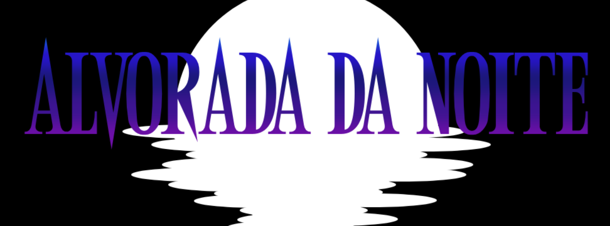
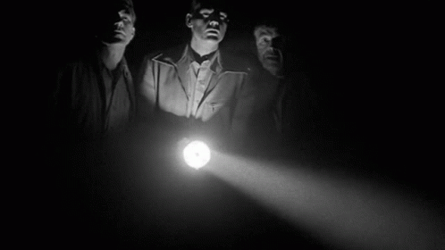

Você despertou. Toda a sua vida foi uma mentira.
Faz apenas alguns meses desde que você acreditava que lobisomens, vampiros e espíritos não existiam.
E agora você tem medo de que eles possam estar na espreita, nas sombras, no beco ao lado de sua casa.
Preparados para dilacerar sua carne ou enlouquecer sua mente. O sobrenatural existe e
agora você terá de viver com isso pelo resto da sua vida... Ao menos, você não está só.

Sobre a mesa
Essa é uma mesa de campanha sem objetivo, o que significa que as sessões/aventuras serão mais episódicas e não há
grande objetivo final para ser alcançado, a sobrevivência e os boletos pagos são o suficiente para os heróis.
O sistema de rpg usado nesta mesa foi o Dark Streets & Darker Secrets por Diogo Nogueira
